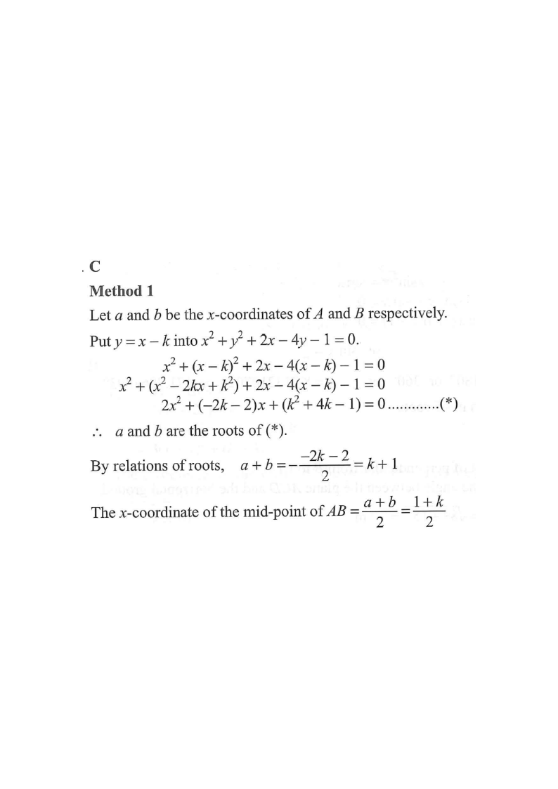

Coordinate Geometry — Intersection of a Line and a Circle
If the straight line $x-y=k$ and the circle
$$x^{2}+y^{2}+2x-4y-1=0$$
intersect at $A$ and $B$, then the $x$-coordinate of the mid-point of $AB$ is
A. $1+k$
B. $1-k$
C. $\dfrac{1+k}{2}$
D. $\dfrac{1-k}{2}$

Figure (original exam diagram)
Step 1 · Write the line as $y=x-k$
The line is $x-y=k$, so rearranging for $y$ gives
$$y=x-k$$
The circle has centre $(-1,\,2)$ and radius $\sqrt{(-1)^2+2^2+1}=\sqrt{6}$ — dragging the slider slides the red line and moves $A$ and $B$ on the blue circle.
Step 2 · Substitute into the circle
Put $y=x-k$ into $x^{2}+y^{2}+2x-4y-1=0$:
$$x^{2}+(x-k)^{2}+2x-4(x-k)-1=0$$
$$x^{2}+x^{2}-2kx+k^{2}+2x-4x+4k-1=0$$
$$2x^{2}+(-2k-2)x+(k^{2}+4k-1)=0 \qquad (\ast)$$
This quadratic in $x$ has the two roots $a$ and $b$ — the $x$-coordinates of the intersection points $A$ and $B$.
Step 3 · Apply the relations of roots
Dividing $(\ast)$ by 2: $\;x^{2}+(-k-1)x+\dfrac{k^{2}+4k-1}{2}=0$.
By the sum of roots,
$$a+b=-\frac{-2k-2}{2}=k+1$$
Step 4 · Mid-point $x$-coordinate
The $x$-coordinate of the mid-point $M$ of $AB$ is the average of the two roots:
$$x_M=\frac{a+b}{2}=\frac{1+k}{2}$$
On the diagram, $M$ (green) always sits at $x=\frac{1+k}{2}$ on the red chord — try moving the slider to check.
Tip: you never need the individual values of $a$ and $b$; the sum of roots of the quadratic in $x$ gives the mid-point $x$-coordinate directly.